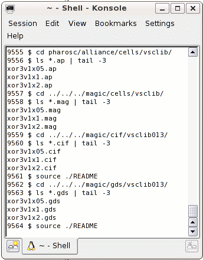

| vlsitechnology.org /Linux help/viewing layout | |
Viewing the Layout Files | |
Linux help
Windows help
Linux Live CD
The layout files are supplied in formats which can be viewed with Graal and Magic. There are CIF and GDS files for each cell which can be viewed using any compatible editor. Alliance Dreal can be used and the README files in the CIF and GDS directories can be sourced to set the correct environment. You can view the vsclib cell layout by going to the directories shown on the right, and similarly for the other libraries.
There are GIF format graphics in the directory
~ $ cd pharosc/alliance/gif/vsclib013 |
which are used by the vsclib.
